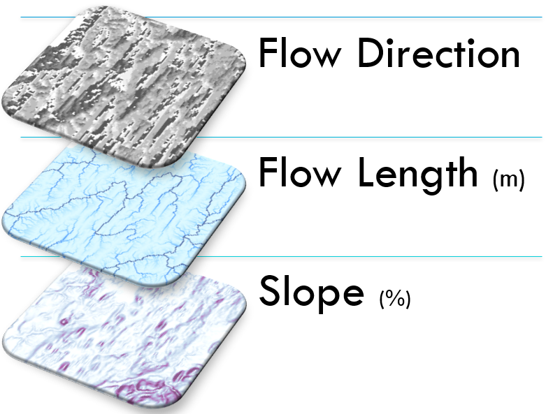

Digital Elevation Model-derived Data
A good digital elevation model (DEM) is key to good culvert model outputs, particular for estimating peak flow. This section covers sourcing elevation data, the importance of hydrological correction, and the kinds of data you can expect to need to derive from your elevation data.
Sourcing elevation data
The sourcing of elevation data is typically locale-specific. The various tools in the Culvert Toolkit that use this data require them in raster format, and you may be able to acquire raster DEM data directly. If not, rasters derived from contour data or a LiDAR point cloud can suffice (though how to do that is beynod the scope of this help documentation).
When acquiring elevation data for this toolkit, there are two primary considerations:
- the DEM must have complete watershed/basin coverage for you area of interest (otherwise the delineations may be cut-off); and,
- the spatial accuracy must consistent with other datasets
Hydrologically-correct DEMs
For the purposes of peak-flow modeling, the hydro-correctedness of the elevation data is important.
You'll need to determine the the trade-off between speed and accuracy based on your use case:
- Ideal: full hydrologic correction of the DEM and re-locating of culverts with LIDAR and imagery
- Workable: fill sinks in DEM; burn hydro lines into the DEMs; snap culverts to available hydro steam lines;
The best approach for determining DEM hydrologic-accuracy and NAACC location-correctedness depends on your use case.
Derived Data for use in the tools

The tools in this toolkit use the following rasters derived from the elevation raster:
- Flow Direction (derive from hydro-corrected DEM)
- Flow Length (derive from hydro-corrected DEM)
- Slope (use original, un-hydro-corrected DEM)
When deriving these rasters, ensure that all rasters are "snapped" to their source: their extents, cell sizes, and positioning should match each exactly.